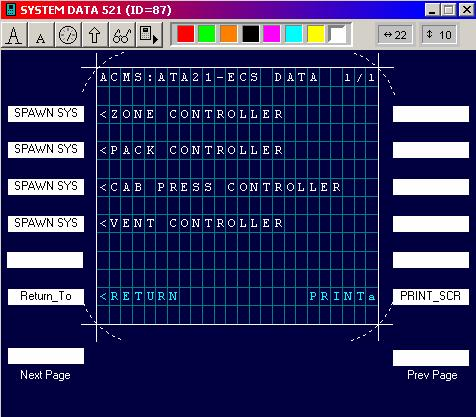

Overview
ACMS systems in most cases are connected to one or more flight deck displays. The display devices supported are MCDUs (Multi-function Cockpit Display Unit), MICDUs (Multi-function Interactive Cockpit Display Unit), Multi-functional Interactive Display Unit (MIDU) and IDUs (Interactive Display Unit). AGS IV allows the application developers to tailor the content and format of the screens appearing on such displays to airline and aircraft specific requirements and preferences.
MCDU and MICDU screens display 14 lines (each 24-character wide) of data. The last line is special and is called the scratchpad. There are six “line select keys” on each side of the screen. Each “line select key” can be specified to perform application-specific functions. MCDUs, depending on the configuration, also have either a pair of Previous Page, Next Page keys or a single Page key that functions as a Next Page key. The functions of these keys are also specified by AGS IV. MCDUs and MICDUs have a built-in simple keyboard (see Figure 5.1).
Figure 5.1: An MCDU or MICDU.
An IDU is a Teledyne proprietary interactive display unit that differs from an MCDU in the following ways:
· Lines are 21 characters wide (instead of 24),
· “Line select keys” are touch sensitive (instead of hard pressed buttons),
· The keyboard is a touch sensitive keypad that is activated and displayed by touching the scratchpad line of the screen.
To design or modify a screen layout, from the Define pull-down menu select the Screens option or press the Define Screen button of the main toolbar (Figure 5.2). Note the SAR option is not available for iDMU.
Figure 5.2: Main Menu and Toolbar with
Define Screen selected.
Once this selection is made a new window is opened, showing a list of all screen names previously defined (see Figure 5.3).
Next to this list are a set of buttons that enable the user to:
define screens,
 existing screens for display or modification,
existing screens for display or modification,
one screen definition into another,
 a defined screen,
a defined screen,
 a screen based on its content, or
a screen based on its content, or
protects MCDU Read-Only status.
Following are the explanations of each of the screen manipulation buttons shown in Figure 5.3:
Figure 5.3: The Screen Selection Window.
- This selection first asks for a screen name (see Figure 5.4). Once a name is entered and OKed, a blank “screen design editor” window, similar to the one shown in Figure 5.6, opens. The details of how to design the screen are explained later in this chapter.
Figure 5.4: Screen name inquiry window.
 - To open a screen for inspection or modification, select the screen name from
the list of pre-designed screens (see Figure 5.3). Once the screen is opened, a
“screen design editor” form, similar to the screen of Figure 5.6 showing a
designed layout, is displayed. At this
point the layout may be inspected or modified.
- To open a screen for inspection or modification, select the screen name from
the list of pre-designed screens (see Figure 5.3). Once the screen is opened, a
“screen design editor” form, similar to the screen of Figure 5.6 showing a
designed layout, is displayed. At this
point the layout may be inspected or modified.
- This function creates a new screen, while copying information from an existing screen. First select the existing screen. Next select and enter the new screen name when prompted. The definition of the new screen can be modified as desired.
 - To delete a screen, select the screen, click the
- To delete a screen, select the screen, click the  button and confirm the deletion.
button and confirm the deletion.
 - This function finds a set of screens that contain a particular
text. The search can be limited to screen names, screen text, parameters
displayed in the screen, line select functions or their arguments (see Figure
5.5).
- This function finds a set of screens that contain a particular
text. The search can be limited to screen names, screen text, parameters
displayed in the screen, line select functions or their arguments (see Figure
5.5).
Figure 5.5: The Find Screen window.
- this button will allow the user to specify if a particular MCDU screen
is 'Read-Only' or not.

Figure 5.6: The Screen Design Editor.
Screen Design Form
Once the or  option is selected, a “screen design editor”
window opens (see Figure 5.6). The
purpose of this window is to enable the application developer to design the
content and layout of a screen that may be called for flight deck display. Through this window, using its own toolbar,
the AGS IV application developer is able to:
option is selected, a “screen design editor”
window opens (see Figure 5.6). The
purpose of this window is to enable the application developer to design the
content and layout of a screen that may be called for flight deck display. Through this window, using its own toolbar,
the AGS IV application developer is able to:
· compose and position fixed (background) text on the screen,
· specify the display of parameter values on the screen (current or history values),
· control the font size and color of the text and parameter values displayed, and
· specify the functionality of the twelve “line select” and “page” keys.
Screen Design Toolbar
The items on the screen design toolbar are:
· two text selection buttons and ,
· a parameter insertion button ,
· an area select button ,
· an inspection button ,
· a simulation button ,
·
a color selection palette  , and
, and
· two position indicators indicating the column and line position of the cursor on the display screen .
In what follows we discuss the function of each of these toolbar buttons and their use in the design of screen layouts. Specified functions apply to both the design of new screens or modification of pre-designed screens.
Background Text
Screens usually have background text. Examples of such text are: screen titles, explanations, headers, menu selections or line select key labeling. The desired text is specified and positioned in the screen by selecting the or text selection button. Once the selection is made, the cursor should be positioned and clicked on the starting position of the text on the screen. This can be followed by the usual typing of the text. The difference between the two text selection buttons is in the size of the selected font.
Parameter Value Selection
This option is used to specify the screen area (or field) in which a particular parameter value is displayed. To do this, select the button. In response, the AGS IV system returns a cursor. Position and click the cursor on the leftmost position of the field in which the parameter value should appear. In response to this clicking, the system opens a window with a list of defined parameters (see Figure 5.7). In the list, locate and select the name of the parameter and specify whether the parameter value should be updated every second (Continuous Update) or the initial display is sufficient. The system automatically shows the predefined length and the format of the value of the selected parameter.
The Display Format field displays the default display format of the parameter, as defined in the parameter definition form. If a different display format is needed for the parameter in this screen, then the format definition may be overwritten by the format options defined in the chapter on Parameters. There is one exception. If a “T” format is to be defined then the following syntax should be used in this window:
Txxxxxx/yyyyyy
where xxxxxx is the text to be displayed if the value is zero,
and yyyyyy is the text to be displayed if the value is one,
xxxxxx and yyyyyy may be text strings up to 6 characters long
The Special Format field is for Teledyne use only and should not be altered.
The age index field can be left blank or a zero can be entered if the value of the most recent sample of the parameter is to be displayed. Alternatively, a 1 or a 2 etc. may be entered for the next oldest sample, the third oldest sample etc.
Figure 5.7: Parameter Selection Window.
Applicable to Screen Design.
Checking the Mandatory selection for a parameter indicates that the parameter value is a mandatory input from the user, and the screen, once entered, cannot be exited without a value having been entered for that parameter.
Once all the information for the parameter is entered the task can be finished with the button.
Field Selection
Once text or parameter fields are positioned and specified on a design form (see the Background text and Parameter Value Selection described before), the developer may want to reposition the information or change the color or font-size of one or more fields. The field “Selection” button provides this capability. To do this, open the screen to be modified and select the option from the screen design toolbar. In response, AGS IV provides a similarly shaped cursor. Use this cursor to enclose the screen area to be repositioned or modified, by clicking on one corner of the area to be selected, and then dragging the cursor to the opposite corner. Once the area is enclosed, use the cursor to reposition the area (click and drag), or change the color or font-size by clicking on the corresponding button in the toolbar area.
Field Inspection
When many parameter value fields are defined in a single screen design form, it may be difficult to identify one or more of these fields by simply looking at the field definition(s). To overcome this problem, the field inspection function is provided. To inspect a parameter field, open the screen to be inspected and select the option from its toolbar. In response, the AGS IV system super-imposes a gray rectangular blank area on the screen. Use the cursor to reposition this area next to the parameter field of interest. The AGS IV system will automatically display the parameter name and age index of this field. Selecting another tool from the toolbar will deactivate this function.
Simulating the Screen Designs
Once a number of screens are defined, AGS IV allows a limited simulation capability. This capability can be used to view the defined screens, and try out the interaction between screens.
Once activated, the simulation will start from the current screen being defined and can move forward by clicking the appropriate line select or page keys. RETURN line selects may be used to return from the screens entered until the first screen of the simulation is reached. If one needs to traverse all screens, then the simulation should start from the main menu.
For simulation of parameters designed into screens, the initial value of the parameter or the sample value will be used. If neither has been defined, then the format string will be displayed in place of the parameter.
Line Select Key Actions
Each of the twelve “Line Select Keys”, as well as the Page control keys of a display device, can be associated with an action from a list of possible actions. To associate an action with a key, or modify an association, or to deactivate the action of a key, click on the white rectangular area representing that key on the screen design form. Once a “line select key” is selected, a window will appear that allows the association of a command to that key (see Figure 5.8). Some commands require additional information (arguments). For example, if a key is to “spawn” another screen, then in addition to the “spawn” command, the other screen’s name must also be specified as an argument.
In Figure 5.8, L5 (Left key #5) is being associated with the SPAWN command. The system expects an argument from the list of pre-defined screens to be selected as the destination of the “spawning” action.
Next Page and Previous Page Key Functions
Functions can be assigned to the next page and previous page keys of the MCDU, in a manner similar to the Line Select Keys. If a display device has only one Page key, then the action associated with the Next Page key will be performed when the Page key is pushed (the action associated with the Previous Page will be ignored).
The function assigned to these keys, in the majority of cases, is a Go To function to another screen.
Figure 5.8: Line Select Window.
Screen FUnctions
A partial list of the commands that can be selected are shown in Figure 5.9. The section below discusses each command:
SPAWN
This command causes the display of another screen (whose name is specified as the argument). If the RETURN function is used in the other screen, then the current screen will be redisplayed. This allows the definition of “child” screens. For example, if screen B spawns screen C, then the RETURN from screen C redisplays screen B.
GOTO
This command causes the display of another screen (whose name is specified as the argument). If the RETURN function is used in the destination screen then the current screen will NOT be displayed. In this case, the screen returned to would be the screen that would have been entered if RETURN was selected from the original screen. This allows the definition of multiple child pages, where the GOTO displays successive child screens, and the RETURN returns to the parent screen. For example, if screen A “spawns” B and B “goes” to C, then the RETURN from B or C will be to A.

Figure 5.9: Line Select Key Commands List.
RETURN
This command redisplays the screen which executed the last SPAWN before entering the current screen. This command requires no arguments.
ACT_REPORT
Not used for FDIMU. This command activates the report that is specified as the argument. The argument can be the report identification number or the word SCRATCHPAD. In the latter case the user is expected to type in a report identification number in the scratchpad area of the display unit, followed by pressing of the line-select key to activate the report.
For example if 101 is
entered as the argument for the line select key, then whenever the key is
pressed, report 101 will be activated. If the word SCRATCHPAD is entered as the
argument, then one must enter a number, say 102, in the scratchpad and press
the line select key, in which case report 102 will be activated.
GET_DATA
This command is used to
either modify the value of a parameter from the scratchpad or move the value of
the parameter to the scratchpad.
When a line select key
programmed to this function is pressed, if the scratchpad contains no entry, the current
value of the parameter is copied to the scratchpad. If a valid value has been
typed into the scratchpad then the value is copied into the parameter. If the
value is not valid for the parameter type then an error message is displayed in
the scratchpad.
The command argument is
a parameter name. Note that the parameter must be an Internal parameter, otherwise the entered value would be
overwritten by new acquired data.
SET_DATA
This command sets a
pre-selected parameter to a pre-selected value.
The command arguments
are:
<
parameter >, < value >
The following is an
example of a valid argument string:
CNTFLT,
17
Where every time the
line select key is pressed, the parameter CNTFLT will be assigned the value 17.
PRINT_SCR
This command causes the
current contents of the screen to be directed to the printer. There is no
argument.
REC_CONT
Not used for FDIMU. This command starts continuous recording on
the QAR. There is no argument. The recording can be stopped with the STOP_REC
command.
STOP_REC
Not used for FDIMU. This command stops recording on the QAR. It
is used to stop the action begun by the REC_CONT command. There is no argument.
Care must be taken when
assigning this command to a line select key, as pressing the key will stop all
continuous recording, even if initiated from a trigger. Incremental recording,
however, is not affected.
dir_isd
This
function makes a directory listing of files in the ISD for display in the
flight deck, five files at a time. Function keys NEXT and PREV allow the user
to page through the directory for a total of 100 entries (20 pages). At any
time, one file may be selected by pressing the line select key next to it,
which invokes the function dsp_report, described below. The argument sequence
is:
<
flight filter >, < group filter >, < erase flag >
The
following are examples of valid argument strings:
ALL , 1
LAST , 0
ALL , 1,
E
The first
example makes a directory listing of files from all flights belonging to Group
1; the second makes a directory listing of files from the last flight, all
groups. The third example makes a directory of files from all flights belonging
to Group 1, and designates the group files as being erasable. Erasable files
are individually erasable from the directory without deleting the file itself.
Group
number is assigned when the report is defined. The selections for the flight
filter are ALL or LAST, which may be abbreviated to A or L. The default is ALL.
The selections for the group filter are a group number greater than zero, or
zero. The default is zero. Either argument may be omitted. The comma is
required if the argument is omitted, but is followed by another.
Additional Commands
Less frequently used commands and their required arguments
are listed below. These are not used for
FDIMU:
adl_dnld
This function initiates
the download of files in the ISD marked for the Loader. If the flight and group
filter arguments are present, only files that meet the criteria indicated are
downloaded. The optional argument sequence is:
<
flight filter >, < group filter >
The following are
examples of valid argument strings:
No
arguments
LAST,
1
,
2
The first example
downloads all files from all flights marked for the Loader. The second example
downloads the files of the current (LAST) flight, report group 1. The third
example downloads the files of ALL flights (the default), group 2. See function
dir_isd for comparison.
adl_format
This function initiates
the formatting of a Loader download disk, prior to a download. No arguments are
used.
clear_dest
This function cancels
the routing of any reports that have been routed by any means, but which have
not yet been actually delivered to the device indicated. The argument sequence is:
<
device codes >
The < device codes
> that are valid are: ALL; ACARS or ACRS; PTR, PRTR, or PRINTER; QAR or DAR;
ADL or PDL; MCDU or CDU; and CMC. The following is an example of a valid
argument string:
PTR
clear_perm_ram
This function clears
permanent RAM to zero and reboots the DMU. All parameters that are saved will
be reset to zero. No arguments are used.
copy_data
This function copies the
present value of one parameter to another. The argument sequence is:
<
target mnemonic >, < source mnemonic >
The function does not
verify the type compatibility of the parameters. The following is an example of
a valid argument string:
FLTCNT,
OCNTFL
display_advice
This function allows the
user to display an advisory message in the scratchpad when a line select key is
pressed, e.g. an error or warning message. The message may be any length up to
the width of the scratchpad. The duration of the display in seconds is
programmable; the value zero is taken to mean display until erased or
overwritten. The argument sequence is:
<
message > , < time >
The following are
examples of valid argument strings:
NOT
FUNCTIONAL , 2
PRESS
CLR KEY , 0
The first message is
displayed for two seconds, the second message remains in the scratch pad until
cleared with the clear key on the display device.
dsp_report
This function displays
the attributes of a selected file in the ISD. It may be entered from the
function dir_isd, in which case the file selected is the one beside the line
select key pressed.
The function may also be
entered from any other screen by programming the key to call the function with either
a permanent file ID in the argument sequence, or the string “SCRATCHPAD”, which
causes the function to take the file ID from a user entry in the scratchpad.
Using line select keys
with the screen on which the file attributes are displayed, it is possible to
route a report formatted from the file to a selected device. Also, if the file
is “erasable”, the option to erase it will be given. The argument sequence is:
<file
ID> , <flight bias> , <copy bias>
The following are
examples of valid argument strings:
240 , 1 , 2
SCRATCHPAD
The first example
selects file ID 240, from the previous flight, second previous copy. If no such
file exists, REPORT NOT FOUND is displayed in the scratchpad. The second
example directs the function to get the file entered by the user in the
scratchpad, current flight, and latest copy.
get_dits
This function allows the
user to add up to five parameters to the acquisition map by entering the label,
source destination index, port, and numerical base of the parameter through the
scratchpad. The argument sequence is:
<
cell number >
The < cell number
> indicates into which “cell” to put the parameter information contained in
the scratchpad. The following is an example of a valid argument string:
2
The scratchpad entry
which the cell will process must be of the form:
<label>/<
sdi>/<port>/< base>
where <label> is
entered in octal, 3 digits or less, <sdi> in binary, 2 digits or less,
and <port> in decimal, two digits or less. The base is one of the list
{B, O, Q, Z, D, H, S}. ‘B’ indicates binary; ‘O’ and ‘Q’, octal with and
without leading zeroes; ‘Z’ and ‘D’, decimal with and without leading zeroes; H
and S, hexadecimal with and without leading zeroes.
In order to display
parameter values, the reserved parameter pairs ODITSSmn must be displayed using
field definitions such as in the DITS data display screen, where ‘m’ is the
cell number and ‘n’ is 1 or 2 for first or second member of the pair.
To use this service,
triggers must be provided to initialize and update the reserved parameters.
get_name
This function allows the
user to select up to six parameters for display in appropriately programmed
screen fields, such as the ACMS Mnemonic Data Display. If a valid parameter
mnemonic is entered in the scratchpad and the line select key is pressed to
call this function, a reserved parameter set of the form OMNEMmn is loaded with
the mnemonic. The symbols ‘m’ and ‘n’ stand for the “cell” number of the
parameter (1 - 6) and 1, 2, or 3 for the first, second, or third set of
characters of the mnemonic (four to a set).
When triggered, the
ASCII-coded value of the parameter is loaded into another set of reserved
parameters, which may then be displayed using the parameter set OMNVALmn, where
‘m’ is the cell number, and ‘n’ is 1, 2, or 3 for high, middle, and low four
ASCII characters of the value. The argument sequence is:
<cellnumber>
The following is an
example of a valid argument string:
2
To use this service, triggers
must be provided to initialize and update the reserved parameters.
get_qardata
This function allows the
user to display selected recording data in the flight deck by entering the subframe
number, word number, and format through the scratchpad. The call argument
indicates the set number of a series of 5 reserved parameter sets, which
contain the subframe, word, format, and value of the selected data. The
argument sequence is:
<
set number >
The following is an
example of a valid argument string:
2
The scratchpad entry
which the call will process must be of the form
<
subframe > / < word > / < format >
where format is one of
the list {O, Q, Z, D, H, S}. ‘O’ and ‘Q’ indicate octal with and without
leading zeroes; ‘Z’ and ‘D’, decimal with and without leading zeroes; H and S,
hexadecimal with and without leading zeroes.
In order to display
parameter values, the reserved parameters OQARDATn must be assigned to standard
field definitions. Again, ‘n’ is the set number, 1 through 5, in the
get_qardata argument.
If the scratchpad
contains no entry, the present value of the OQARDATn parameter, is displayed in
the scratchpad. To use this service, triggers must be provided to initialize
and update the reserved parameters.
MCD_RptDir
This function is similar
to the dir_isd function, described above, except this one generates a hardcopy
printout of ISD directory information. The same filtering parameters are used
to limit the printout to last flight or all flights, a single collector group,
or all groups.
The content of the
printout is fixed, as is the content of the report directory screen; however,
the printout header is programmable. The argument sequence is:
<
flight > , < group >
The following are
examples of valid argument strings:
L,
1
A
MCD_Select_RMR
The use of this function
is described in detail in the chapter on Replay Memory Reports (RMR) and is
repeated in condensed form in this section for convenience. In general, RMRs
contain subsets of the total data in their corresponding RMBs Replay
Memory Blocks. The
subset is specified by up to four variables. These variables are (1) block
number, (2) engine number, (3) parameter set, and (4) a user toggle
variable. The block
number is assigned at collection time to the reserved parameter ORPTBLKN by the
trigger logic, using the AMTAL statement:
ORPTBLKN:
= < number >
Because many RMR reports
can be generated from a single RMB, a means to specify a large number of report
formats for an RMB was created using report format extensions. The argument
sequence is:
<
report title > , < report ID > , < engine max > , < parameter
set max > ,
< parameter set min > , < toggle
valid >, < reason valid >, < block max >
The following is an
example of a valid argument string:
ENG
EXCD,300,4,10,1,0,0,99
which indicates that the
title line of the DISPLAY screen shall read “ENG EXCD RMR”, that the RMB is
collected under report ID 300, that the maximum value for engine number is 4,
that the maximum parameter set is 10, the minimum parameter set is 1, no toggle
variable is defined, no “reasons” are defined and the maximum block number is
99.
mcdu_mf
This function allows the
user to reprogram miniframe-four of the data frame. The function gives access
to a series of menu and fill-in screens. No arguments are used.
mcdu_modmgr
This function allows the
user to modify any internal parameters of the class Modifiable. The function
gives access to a series of menu and fill-in screens. No arguments are used.
mcdu_rpgreport
This function allows the
user to reprogram the triggering of specified reports. The function gives
access to a series of menu and fill-in screens. No arguments are used.
present_report
This function formats
the contents of an ISD file into a report and routes it to the display screen.
It is used in the function dsp_report to route reports to the display, but can
be invoked independently. The routine
expects the filename or report ID to be in the argument or else the scratchpad.
In the latter case, the argument contains the string “SCRATCHPAD”. If the
filename is completely specified, that particular file is routed to the
printer. If only the report ID is supplied, the latest ISD file for that report
is routed to the display. The argument sequence is:
<
filename > , < flight bias > , < copy bias >
The following are
examples of valid argument strings:
101,
1:101.3,2,1
The first example
formats and displays the most recent copy of the file. The second specifies a
flight, flight bias, and copy bias.
print_report
This function routes a
report file to the printer. The routine expects the filename or report ID to be
in the argument or else the scratchpad. The argument then contains the string
“SCRATCHPAD”. If the filename is completely specified, that particular file is
routed to the printer. If just the report ID is supplied, then the latest ISD
file for that report is routed to the printer. The argument sequence is similar
to that of the present_report:
<
filename >,< flight bias >,< copy bias >
The following are
examples of valid argument strings:
101
1:101.3,2,1
route_report
This function
generalizes the report routing process, so that the device is programmable. The
function operates similarly to print_report except that the device and the
condition (ALSO or ONLY) are additional elements of the argument string. The
argument sequence is:
< filename >,< flight bias >,<
copy bias >, < device >,< condition >
The following are
examples of valid argument strings:
101,0,0,ACARS,ALSO
1:101.3,2,1,ADL,ONLY
reboot_sys
This function causes a
reboot of the DMU, according to the type specific in the argument string. The
argument sequence is:
<type>
The valid types are
“AIRLINE” and “BOOTSTRAP”. “AIRLINE” causes the airline application to be
re-started, what is also known as a “cold start”. “BOOSTRAP” causes the
bootstrap to be activated, similar to the case where no application is loaded
in the airborne unit.
The following is an
example of a valid argument string:
AIRLINE
upload_app
This function initiates
the upload of a new application from the loader. No arguments are used.
Other Capabilities
The actions that can be associated with the “line select
keys” are not limited to the selections in the Line Select definition window
(see Figure 5.9) or the arguments that can be used with the CALL function. It is
possible to achieve almost any kind of a result by simply setting a parameter
value by the line select key, and then having a trigger monitor this parameter
for the value and performing the desired function.
Security Token
In addition to the commands and arguments, the security token in the line select key definition screen must be entered if a password is to be associated with the functioning of that key. Password security for screens as well as uplink requests are described in detail, in the chapter on Configuration, later in this manual.